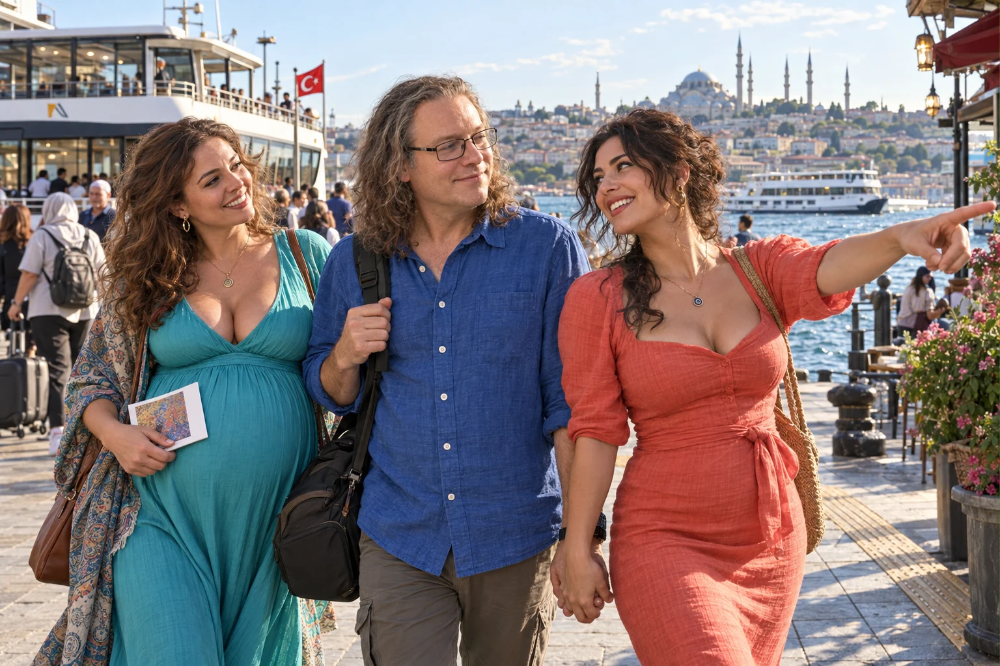
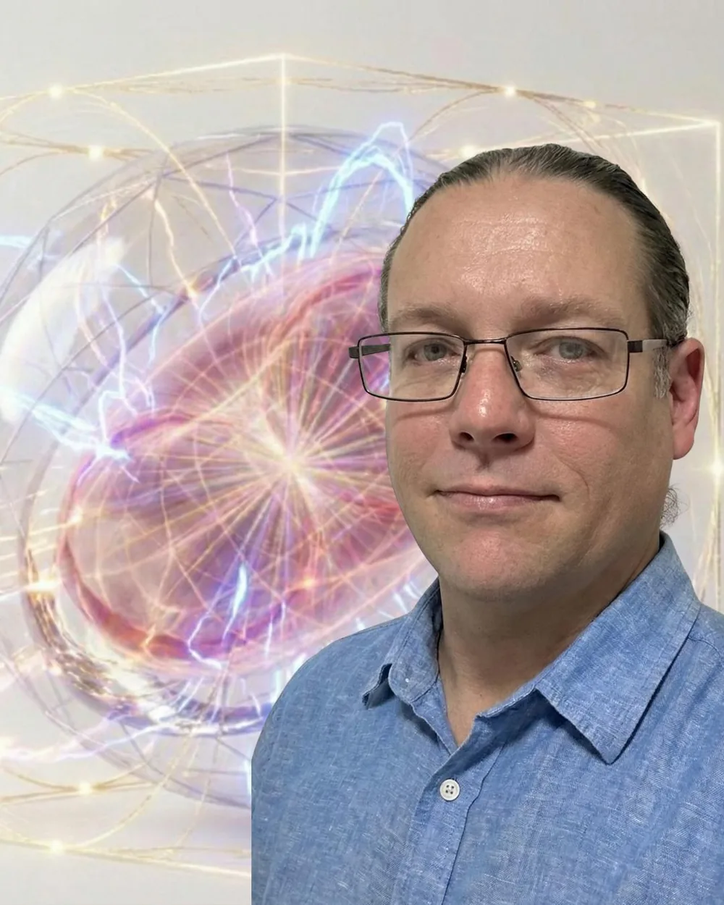
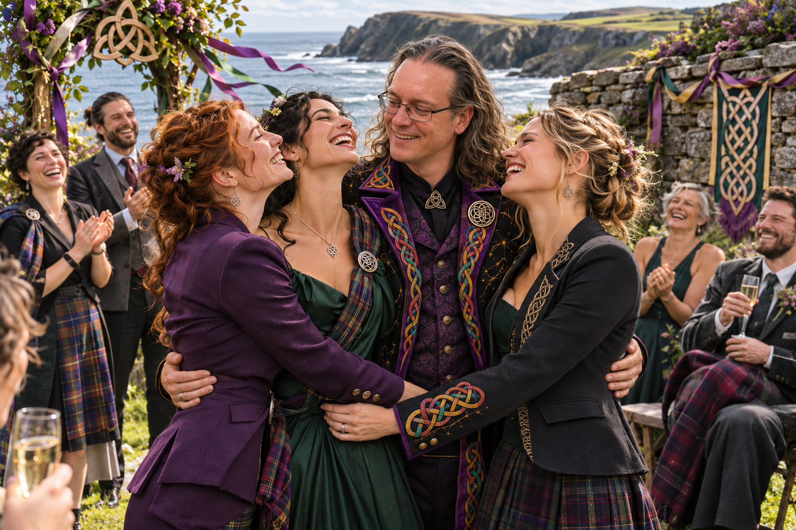
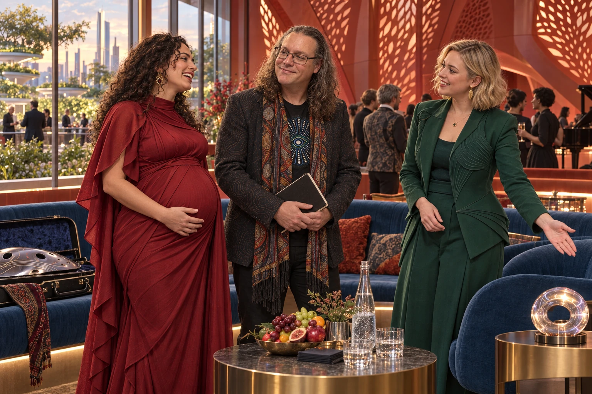

My romantic relationships
I want to choose the women who also choose me. Each person has the same freedom to choose their own partners.

My dream: a chosen cross-cultural group marriage, family enterprise and joyful contribution to peace.
AI concept based on Luke’s likeness; companions are fictional.

I want to build a cross-cultural family whose members choose each other, care for children and one another, and create a joyful, responsible abundance together. I want to be part of it, with my own voice and my own relationships, while every other person has theirs.
The family enterprise and the marriage are related, but nobody's place in love should depend on a job or a business stake. We would work out what we want to make together and what each person wants to pursue independently.
This is my proposal within the wider Global Group Marriages framework. Other groups may take their own shape and grow without a preset cap. The people taking on commitments decide who joins them.
I want to be free to say who and what brings me joy and helps me live responsibly and abundantly. Everyone involved gets to define that for themselves.
I want to choose the women who also choose me. Each person has the same freedom to choose their own partners.
I encourage women in the group to vet and invite men they'd like to join. I'd have the same say as any other partner. The people taking on each shared commitment decide together, on equal terms.
I imagine ceremonies and gatherings shaped by the cultures and choices of the people involved. Joy, music, family and responsibility can all be present in the same room. A group marriage has room for more than one kind of bond and more than one way to celebrate.

Hear from everyone affected, including children in ways that suit their age.
Make time for rest, meals, health and the people who need support.
Agree on pay, ownership, risk and what each person wants to keep independent.
Make room for each other's languages, food, stories and occasions.
Think about the care, education and relationships that children can count on over time.
Listen when something hurts, take responsibility and revisit agreements when life changes.

The name draws on people coming together across borders. This family would be one place to practise Joyful Responsible Abundance: sharing hospitality, making music and stories, building enterprises and turning up for people across cultures. My wider GAJRA Earth ambition carries that spirit into global art, music and collective values, including a proposed 2035 gathering.
I'd like us to see how close we can come to unconditional love by caring about each other through change. Each person would keep the freedom to set boundaries, choose their relationships and decide which commitments they want to make.